صور رنينية عالية الدقة لنظام قزم أبيض ذي كوكب واحد
الملخص
تتعزز الإثارة الديناميكية للكويكبات بفعل تآثرات رنين الحركة المتوسطة مع الكواكب عندما يغادر نجمها الأم المتوالية الرئيسية. غير أن التحري العددي عن المآلات الرنينية ضمن محاكيات ما بعد المتوالية الرئيسية مكلف حاسوبياً، مما يحد من مدى إنجاز تحليلات رنينية مفصلة. هنا نجمع بين استخدام عنقود حوسبة عالي الأداء والصياغة العامة شبه التحليلية لعرض التذبذب الرنيني التي وضعها Gallardo et al. (2021)، وذلك من أجل تكميم الاستقرار الرنيني وقوته وتغيره الناشئ عن التطور النجمي في نظام ذي كوكب واحد يحتوي على كويكبات في مدارات متقاطعة وغير متقاطعة. نجد أن عدم الاستقرار الرنيني يمكن حصره بدقة باستخدام قيم المتوالية الرئيسية فقط، وذلك بحساب عرض تذبذب أعظمي بوصفه دالة في طول حضيض الكويكب. كما نكمم الكفاءة النسبية لرنينات الحركة المتوسطة ذات الرتب المختلفة في تثبيت مدارات الكويكبات أو زعزعتها خلال مرحلتي فرع العمالقة والقزم الأبيض. تمثل الرنينات : و: و: مصادر فعالة لتلويث الأقزام البيضاء، كما أنه حتى عندما تقع في نطاق المدارات المتقاطعة، تستطيع الرنينات : و: أن تحتفظ بخزانات صغيرة من الكويكبات في مدارات مستقرة طوال تطور فرع العمالقة والقزم الأبيض. ويمثل هذا البحث خطوة أولية في توصيف كيفية تطور البنى المبسطة للفجوات الشبيهة بفجوات كيركوود خارج المجموعة الشمسية بعد المتوالية الرئيسية.
keywords:
حزام كايبر: عام – الكواكب الصغيرة، الكويكبات: عام – الكواكب والأقمار: التطور والاستقرار الديناميكيان – الميكانيكا السماوية – النجوم: التطور – الأقزام البيضاء.1 المقدمة
ديناميات الأنظمة الكوكبية بعد المتوالية الرئيسية غنية. فبعد أن تبقى البنى والخزانات الكوكبية وبنى الأجسام الصغيرة ساكنة نسبياً طوال مليارات السنين المحتملة على امتداد المتوالية الرئيسية، فإنها تشهد تغيرات فيزيائية ومدارية كبيرة أثناء تشنج النجم الأم في سكرات موته وبعدها (Veras, 2016).
تتجلى المحصلة النهائية لكثير من هذه التغيرات في الرصيد المتنامي من أرصاد البقايا الكوكبية القريبة من أغلفة الأقزام البيضاء الضوئية وداخلها. وفي الواقع، تشير المسوح المخصصة إلى أن أكثر من ربع جميع الأقزام البيضاء في درب التبانة يراكم حالياً مادة كوكبية (Zuckerman et al., 2003, 2010; Koester et al., 2014)، مع تراكيب تتراوح من صخرية شبيهة بالأرض (Jura & Young, 2014; Doyle et al., 2019) إلى غنية بالمواد المتطايرة (Xu et al., 2017) وربما متسقة مع كواكبيات بدائية (Xu et al., 2013; Curry et al., 2022) أو كويكبات أو نيازك (Gänsicke et al., 2012; Wilson et al., 2015; Melis & Dufour, 2017; Swan et al., 2019; Buchan et al., 2022) أو مذنبات (Farihi et al., 2013; Raddi et al., 2015; Hoskin et al., 2020) أو أقمار (Doyle et al., 2021; Klein et al., 2021).
لقد رُصد تراكم المادة الكوكبية على الأقزام البيضاء، وهو إجراء يعرف شائعاً باسم “تلوّث القزم الأبيض”، رصداً مباشراً (Cunningham et al., 2022)، ويُعتقد أنه ينشأ دائماً تقريباً (Rocchetto et al., 2015; Bonsor et al., 2017) من أقراص حول نجمية بمقياس أنصاف أقطار شمسية. ومن المرجح أن تمثل هذه الأقراص حطام كواكب صغيرة متفتتة، وقد رُصد الآن أكثر من 60 من هذه الأقراص (مثلاً Farihi, 2016; Manser et al., 2020). وقد وُصفت عملية تشكلها ديناميكياً (Jura, 2003; Debes et al., 2012; Veras et al., 2014a; Malamud & Perets, 2020b; Veras & Kurosawa, 2020; Li et al., 2021; Brouwers et al., 2022)، وتعكس طبيعة أجسامها السلفية التركيب الكيميائي المرصود في الأغلفة الضوئية للأقزام البيضاء الأم.
يشير هذا التباين في التركيب وفي الأجسام الكوكبية السلفية المحتملة إلى أن الآليات الديناميكية التي تنقل المادة الكوكبية بسهولة إلى الجوار القريب من الأقزام البيضاء خاصة بكل نظام. ومع ذلك، فإن الآلية التي يُعتقد أنها شائعة هي سلسلة من الاضطرابات الثقالية يولدها كوكب باق ويفرضها على جسم صغير، فتخلق مساراً يتيح للأخير بلوغ نصف قطر روش للقزم الأبيض، أي مسافة تعطله عنه.
تكشف الدراسات المتزايدة لهذه المسارات11 1 انظر الشكل 6 في Veras (2021) للاطلاع على قائمة مرجعية كاملة للمنشورات بوصفها دالة في البنية الكوكبية. أنها تصبح أكثر احتمالاً لأن تُسلك عندما يزداد عدد الأجسام المُضطربة في النظام، سواء أكانت كواكب إضافية (Veras et al., 2016; Maldonado et al., 2021; O’Connor et al., 2022) أم رفقاء نجميين إضافيين (Bonsor & Veras, 2015; Hamers & Portegies Zwart, 2016; Petrovich & Muñoz, 2017; Stephan et al., 2017; Veras et al., 2017). غير أنه في جزء معتبر من الأنظمة قد لا يبقى إلا كوكب واحد. وفي الواقع، تقع جميع الكواكب المعروفة التي تدور حول أقزام بيضاء في أنظمة ذات كوكب واحد (Thorsett et al., 1993; Sigurdsson et al., 2003; Luhman et al., 2011; Gänsicke et al., 2019; Vanderburg et al., 2020; Gaia Collaboration et al., 2022)، بما في ذلك الحالة اللافتة لنظير مشتري تقريبي من حيث كل من فصل الكوكب عن النجم وكتلته (Blackman et al., 2021).
في الأنظمة ذات الكوكب الواحد والنجم الواحد، تكون المسارات الديناميكية التي تتيح لكويكب أو مذنب بلوغ القزم الأبيض مقيدة. وفي غياب قوى خارجية، يجب أن يكون الكوكب على مدار شاذ لكي يضطرب كويكب نحو قزم أبيض (Antoniadou & Veras, 2016). ويمكن للقوة الخارجية التي يوفرها النجم أثناء عبوره أطوار فرع العمالقة وفقدانه الكتلة أن تغير حدود الاستقرار (Debes & Sigurdsson, 2002; Veras et al., 2013a; Mustill et al., 2014; Veras & Gänsicke, 2015) وبذلك تتيح للأجسام الصغيرة بلوغ النجم (Bonsor et al., 2011; Frewen & Hansen, 2014; Veras et al., 2021)، لكن ليس دائماً (Veras et al., 2020).
إحدى الطرق لزيادة شذوذ جسم صغير إلى قيمة عالية بما يكفي لبلوغ نصف قطر روش للقزم الأبيض هي أن يُحتجز الجسم الصغير في رنين حركة متوسطة مع الكوكب. وعلى الرغم من أن الرنينات تظهر كثيراً في أدبيات الكواكب بعد المتوالية الرئيسية، فإن قلة فقط من هذه الدراسات ركزت فعلياً على ديناميات الرنين. وضع Voyatzis et al. (2013) نموذجاً شبه تحليلي لكيفية تغيير فقدان الكتلة النجمية لمعادلات الحركة الرنينية، واستخدموا العدد المميز الأعظمي لليابونوف مؤشراً على الفوضى لاستكشاف المناطق ذات الصلة من فضاء الطور. وركز Smallwood et al. (2018, 2021) على كفاءة الرنينات طويلة الأمد المستحثة في الأنظمة متعددة الكواكب بعد ابتلاع أحد الكواكب. وقد تضمنت دراسات أخرى (Debes et al., 2012; Caiazzo & Heyl, 2017; Veras et al., 2018; Antoniadou & Veras, 2019; Ronco et al., 2020; Veras et al., 2021; Veras & Hinckley, 2021; Li et al., 2022) رسوماً منفردة مفيدة تبين مدى رنينات حركة متوسطة بعينها في الأنظمة الكوكبية بعد المتوالية الرئيسية.
في هذه الورقة، نقدم تحليلاً عددياً مركزاً ومفصلاً لرنينات الحركة المتوسطة بعد المتوالية الرئيسية في نظامين متشابهين ذوي كوكب واحد، يحتوي كل منهما على كويكباً ولا يختلفان إلا في كتلة الكوكب. ولتوضيح الحجم، فإن هذا العدد من الكويكبات أكبر بمرتبة قدرية من عدد الكويكبات الذي استخدمناه في محاكيات Veras et al. (2021)، كما أن جميع هذه المحاكيات تجمع تطور النجم والكوكب على نحو متسق ذاتياً باستخدام الشيفرة البطيئة ولكن الدقيقة من Mustill et al. (2018). هنا نجمع هذه المجموعة المكلفة حاسوبياً من التكاملات العددية لهذه الكويكبات مع تحليل أتاحه استخدام شيفرة التوصيف الرنيني العامة شبه التحليلية التي وضعها Gallardo et al. (2021).
استُخدمت نسخة مبسطة من شيفرة التوصيف هذه في سلسلة من الأوراق السابقة (Gallardo, 2006, 2019, 2020)، وهي ذات قيمة خاصة لأنها لا تقتصر على رتبة رنينية معينة ولا تتعرض لإخفاقات التقارب التي تعانيها بعض توسعات دالة الاضطراب. فالشيفرة، بدلاً من ذلك، تحسب دالة الاضطراب عددياً انطلاقاً من مجموعة كاملة من العناصر المدارية والكتل، وتولد عدة مخرجات مفيدة، وأهمها لهذه الدراسة عرض التذبذب الرنيني. وتتحقق هذه الإمكانية بافتراض أن أطوال الحضيض وأطوال العقدة الصاعدة لكل من الكوكب والكويكب ثابتة طوال الحركة الرنينية، لكنها تبقى قابلة للاختيار بوصفها شروطاً ابتدائية.
أهدافنا هنا أربعة: (i) تقديم خريطة رنينية مفصلة لبنية كوكبية متطورة تغطي مدى واسعاً من رتب الرنين، (ii) تحديد طريقة فعالة لتوصيف هذه الرنينات، (iii) تحديد الرنينات التي يمكن أن تكون فعالة في اضطراب الكويكبات نحو القزم الأبيض، لهذه البنية المعطاة، و(iv) تحديد الرنينات التي يمكن أن تكون فعالة في قذف الكويكبات من النظام. وهذه النقطة الأخيرة ذات صلة خاصة بتقييم الأصول المرجحة للأجسام بين النجمية الصغيرة الطافية حرة (Moro-Martín, 2022)، التي قد نرى عدداً متزايداً منها يعبر النظام الشمسي باستخدام مرصد Vera C. Rubin Observatory.
تُنظم هذه الورقة كما يأتي. في القسم 2، نصف إعداد محاكياتنا. ونحلل هذه النتائج في القسم 3، ثم نلخص في القسم 4.
2 إعداد المحاكاة
لأن هدفنا هو تحليل المآلات والقيود الرنينية لنظام ذي كوكب واحد تفصيلاً، فقد اخترنا الشروط الابتدائية لمحاكياتنا بعناية بحيث تولد إحصاءات وافية مع بقائها فيزيائية ومعقولة. وقد استرشدنا بالاعتبارات الآتية:
-
1.
يتعرض كل من الكويكبات والكوكب للتدمير من النجم الأم أثناء انتقاله من نجم على المتوالية الرئيسية إلى نجم على فرع العمالقة. ويمكن لزيادة حجم النجم أن تسحب الأجسام مَدّياً إلى الداخل وتبتلعها حتى مسافات تبلغ عدة وحدات فلكية (Kunitomo et al., 2011; Mustill & Villaver, 2012; Nordhaus & Spiegel, 2013; Villaver et al., 2014; Madappatt et al., 2016; Ronco et al., 2020)، كما يمكن لزيادة لمعان النجم أن تفتت الكويكبات حتى عشرات الوحدات الفلكية (Veras et al., 2014b; Veras & Scheeres, 2020) وأن تجر الحطام إلى الداخل والخارج كليهما (Veras et al., 2015a, 2019; Ferich et al., 2022). ومن ثم توجد مسافة دنيا للبقاء لكل من الكوكب والكويكبات، ويمكن للكويكبات أن تشغل شريطاً واسعاً من فضاء المسافات.
-
2.
عندما تكون كتلة الكوكب صغيرة جداً، لا تتجاوز عروض فضاء المعلمات لرنينات الحركة المتوسطة مع الكويكبات الدقة المحققة في المحاكيات العددية. وبعبارة أخرى، في هذه الحالة يلزم أخذ عينات من عدد كبير جداً من الكويكبات لكشف البصمة الرنينية بوضوح. وعلى مقاييس المسافة بالوحدات الفلكية، تقارن هذه الكتلة الحرجة بكتلة أرض فائقة أو نبتون مصغر (Veras et al., 2021). لذلك، عموماً وفي الوقت الحاضر، لا تنتج إلا الكواكب العملاقة بصمات ذات دقة كافية في محاكيات الأنظمة الكوكبية المتطورة على مقاييس الوحدات الفلكية لأغراضنا.
-
3.
داخل النظام الشمسي، نرى رنينات بين أجسام تقع على مدارات تماسية متقاطعة (مثل نبتون وبلوتو) ومدارات تماسية غير متقاطعة (مثل بعض كويكبات فجوة Hecuba). كما نرصد بصمات رنينية ذات رتب أعلى بكثير (مثلاً الشكل 20 من Dermott et al., 2021) مما يمكن تحقيقه حالياً في أرصاد الأنظمة الكوكبية خارج المجموعة الشمسية، مع أن مثل هذه البصمات موجودة بلا شك. لذلك، كلما ازداد تنوع أنواع رنينات الحركة المتوسطة التي نستطيع أخذ عينات منها، كان تمثيلنا للواقع أفضل.
-
4.
إن كوكباً على مدار دائري لا يستطيع إلا نادراً جداً، إن استطاع أصلاً، اضطراب كويكب إلى قرب نجمه الأم (Antoniadou & Veras, 2016; Veras et al., 2021). لذلك يجب اعتماد كوكب على مدار شاذ من أجل أخذ عينات من تلوّث الأقزام البيضاء. علاوة على ذلك، نادراً ما تكون الكواكب في الأنظمة الكوكبية المتطورة التي ستبقى إلى طور القزم الأبيض على مدارات دائرية تماماً (Grunblatt et al., 2018, 2022)، ولا يمكن تدويرها إلا باضطرابات ثقالية لاحقة وبآثار مدية من أجسام أكبر أخرى في النظام نفسه (Veras & Fuller, 2019, 2020; Muñoz & Petrovich, 2020; O’Connor & Lai, 2020; Stephan et al., 2021) أو بالهجرة داخل أغلفة مشتركة (Chamandy et al., 2021; Lagos et al., 2021; Szölgyén et al., 2022; Yarza et al., 2022).
قادتنا هذه الاعتبارات إلى اختيار بنية كوكبية شبيهة بتلك المستخدمة في Veras et al. (2021)، حيث يكون نصف المحور الرئيسي للكوكب في نهاية المتوالية الرئيسية au ويكون شذوذه . تقع الكويكبات داخل مدار الكوكب وتملأ فضاء المعلمات بدقة عالية، مع قيد أن حُضيضاتها المدارية تتجاوز 2 au و au.
أتاحت لنا هذه الاختيارات أخذ عينات من مجموعة متنوعة من توافقات الحركة المتوسطة: ثلاثة من الرتبة الأولى (:، :، :)، وأربعة من الرتبة الثانية (:، :، :، :)، وأربعة من الرتبة الثالثة (:، :، :، :)، وعدداً كبيراً من رنينات ذات رتب أعلى قليلاً. كما أتاحت لنا اختياراتنا أخذ عينات من مدارات متقاطعة وغير متقاطعة.
تفاصيل إعداد محاكياتنا كما يأتي. عالجنا الكويكبات بوصفها جسيمات اختبارية. لذلك لم يتأثر مدار الكوكب بالكويكبات، وربطنا عدداً كبيراً من المحاكيات التسلسلية لننشئ صورة رنينية واحدة عالية الدقة. وقد فعلنا ذلك لإنشاء محاكاتين مركبتين، تحتوي كل واحدة منهما على مجموع قدره جسيم اختباري. في إحدى المحاكاتين المركبتين كانت كتلة الكوكب كتلة زحل، وفي الأخرى كانت كتلة الكوكب كتلة المشتري.
أما للعناصر المدارية الأخرى للأجسام، فقد جعلنا ميل الكوكب ووسيطة حضيضه وطول عقدته الصاعدة كلها مساوية لـ. وخلال التطور النجمي، عندما يفقد النجم كتلته، يبقى كل من و ثابتين، لكن يتغير (Omarov, 1962; Hadjidemetriou, 1963; Veras et al., 2011)، بافتراض فقدان كتلة متساوي الخواص (Veras et al., 2013b; Dosopoulou & Kalogera, 2016a, b). وبالنسبة إلى الكويكبات، أخذنا عينات عشوائية من توزيعات منتظمة لـ au و، مع اشتراط أن يكون حضيضها المداري au. وأخذنا عشوائياً قيماً لـ من توزيعات منتظمة من إلى ، واخترنا عشوائياً و من توزيعات منتظمة من إلى .
بدأ النجم المضيف نجماً على المتوالية الرئيسية كتلته وتطور إلى قزم أبيض كتلته ، وفق الوصفة التي تقدمها شيفرة SSE (Hurley et al., 2000). وقد أُدمج هذا التسلسل التطوري داخل شيفرة تكامل عددي تنشر المدارات الكوكبية. وتوصف تفاصيل هذه الشيفرة في Mustill et al. (2018). هنا استخدمنا مكامل RADAU فيها، واعتمدنا تسامحاً قدره . بدأنا المحاكيات عند نهاية طور المتوالية الرئيسية وشغلنا النظام مدة 10 Myr لإزالة حد أدنى من الكويكبات التي لم تكن لتبقى خلال المتوالية الرئيسية. ثم واصلت المحاكيات عبر أطوار فرع العمالقة، ثم مدة 1 Gyr خلال طور القزم الأبيض. وبالمجموع، تقابل مدة المحاكاة 1.343 Gyr.
من الآن فصاعداً نستخدم كلمة “عدم الاستقرار” لوصف محاكاة يكون فيها الكويكب قد أفلت من النظام، أو اصطدم بالكوكب، أو اصطدم بالنجم. وتنطوي هذه المآلات على دقائق كمية: فحدود النظام هنا يُفترض أنها غير كروية وفقاً للمد المجري، وأنها تتغير مع فقدان الكتلة من النجم المتطور (Veras & Evans, 2013; Veras et al., 2014c). وتشكل هذه الحدود إهليلجاً ثلاثي المحاور، بمحاور نصفية من رتبة au، بافتراض مسافة مركزية مجرية قدرها 8 kpc. وحُسبت التصادمات مع النجم المركزي بافتراض أنه بعد أن يصبح النجم قزماً أبيض، تكون كرة روش الخاصة به : لذلك ضخّمنا نصف قطر النجم اصطناعياً داخل الشيفرة إلى هذه القيمة النموذجية22 2 أي جسم يبلغ نصف قطر روش سيتراكم في النهاية على النجم نفسه، ما لم تكن للجسم مقاومة داخلية عالية على نحو غير مألوف (Brown et al., 2017; McDonald & Veras, 2021) أو كان كبيراً بما يكفي بحيث ينتج تفككه مدى واسع الانتشار من الطاقات (Malamud & Perets, 2020a)..
3 نتائج المحاكاة
على الرغم من أن جوانب كثيرة من مآلات المحاكاة قابلة للتحليل، فإننا نركز في هذا البحث حصراً على المخرجات المرتبطة بالرنين. ويمكن العثور على وصف لخصائص ونتائج أخرى، باستخدام محاكيات مشابهة لكن بدقة أدنى بكثير، في Veras et al. (2021). نبدأ هنا بعرض صور عدم الاستقرار الكاملة (القسم 3.1)، ثم نكبر ثلاث مواضع مختلفة: نطاق المدارات غير المتقاطعة (القسم 3.2)، ورنين : (القسم 3.3)، والرنينات الأخرى من الرتبة الأولى (القسم 3.4). ثم نقارن عروض التذبذب الرنيني المحسوبة بمجموعات مختلفة من الشروط الابتدائية في القسم 3.5، ونكمم قوى رنينية مختلفة ومآلات عدم الاستقرار في القسم 3.6.
3.1 الملامح الكاملة
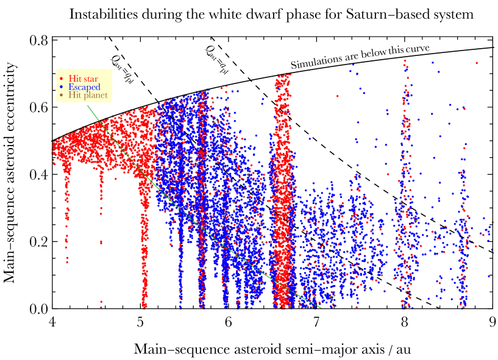
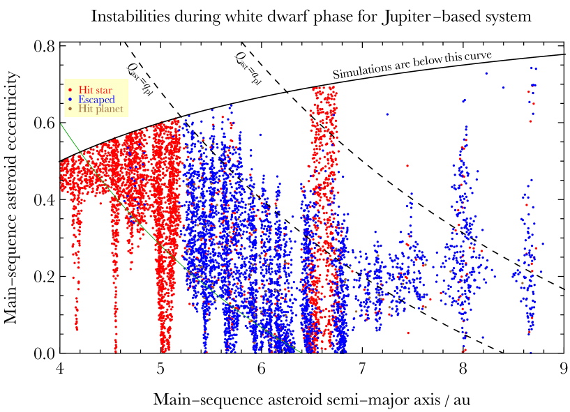
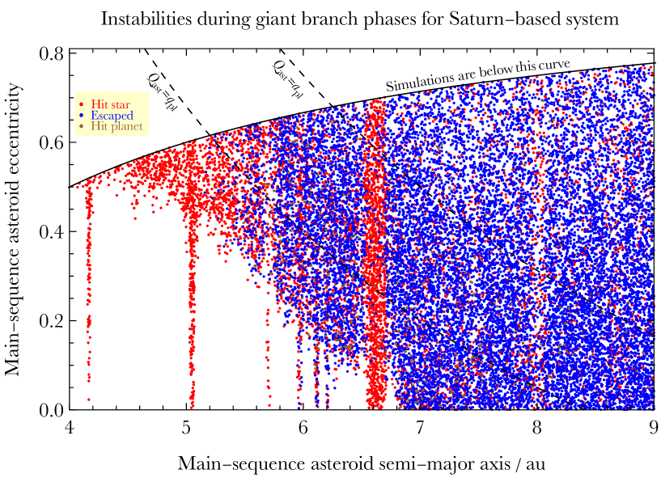
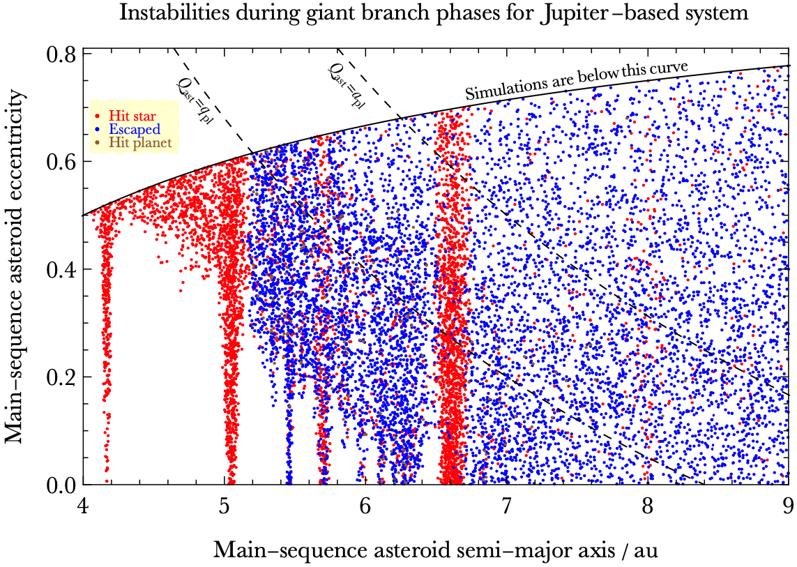
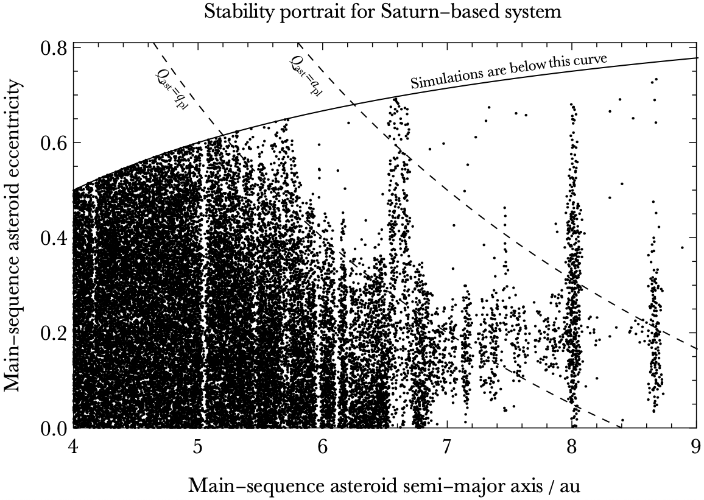
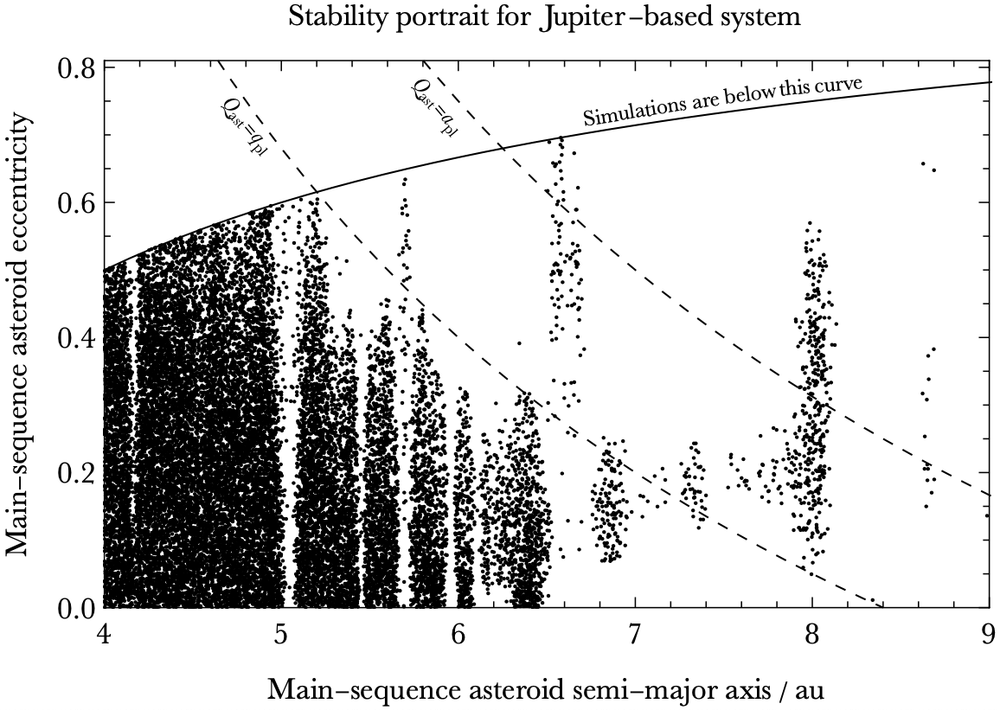
نعرض ملامح عدم الاستقرار والاستقرار الكاملة لمحاكياتنا في الأشكال 1-3 من غير أن ندخل بعد أية علامات تدل على الرنين. في كل شكل، تمثل اللوحة العليا النظام ذا الكوكب بكتلة زحل، وتمثل اللوحة السفلى النظام ذا الكوكب بكتلة المشتري.
تحدد الأشكال 1 و2 الكويكبات التي أصبحت غير مستقرة خلال طوري القزم الأبيض وفرع العمالقة، على الترتيب، ويحدد الشكل 3 الكويكبات المستقرة. وفي مخططات عدم الاستقرار، تمثل ألوان النقاط الثلاثة مآلات مختلفة لعدم الاستقرار. نعرض هذه الملامح، وكذلك معظم المخططات في هذه الورقة، بوصفها دالة في كل من و، وهما يمثلان شروطاً ابتدائية (تقابل زمناً يسبق نهاية المتوالية الرئيسية بمقدار 10 Myr).
يحتوي كل مخطط على منحنيات: واحد متصل أسود، واثنان متقطعان أسودان، وربما واحد متصل أخضر. يعكس المنحنى المتصل الأسود حد () الذي لم تُحاكَ أي كويكبات فوقه. ويمثل الخط المتقطع الموسوم حد تقاطع المدارات عندما تكون وسائط حضيض المدارات متعاكسة الاصطفاف: فوق هذا الخط المتقطع، يتجاوز الأوج الابتدائي للكويكب () الحضيض الابتدائي للكوكب (). أما الخط المتقطع الموسوم فيمثل بدلاً من ذلك الموقع الذي يساوي فيه الأوج الابتدائي للكويكب نصف المحور الرئيسي الابتدائي للكوكب.
يمثل المنحنى الأخضر المتصل تقريباً تحليلياً لتآثرات اللقاء القريب بين الكوكب والكويكبات خلال طور القزم الأبيض، حيث نفترض أن اللقاء القريب يحدث ضمن ثلاثة أضعاف نصف قطر هيل لحضيض مدار الكوكب. لذلك يُعطى المنحنى بالدالة الآتية:
| (1) |
حيث إن و هما نصفا قطر هيل للكوكب خلال طوري المتوالية الرئيسية والقزم الأبيض على الترتيب؛ وقد اشتُقت علاقة القوة 4/3 بين هاتين الكميتين في Payne et al. (2016). ومن المثير للاهتمام أن المعادلة (1) مستقلة عن ، مما قد يكون مفيداً عند نمذجة الأنظمة الكوكبية المرصودة حول الأقزام البيضاء. وستُرسم أيضاً جميع المنحنيات في الأشكال 1-3 في مخططات أخرى في هذه الورقة.
تظهر في الأشكال 1-3 خمس سمات واضحة مباشرة. الأولى أنه لا تكاد الكويكبات تصطدم بالكوكب في أي حالة: إذ تهيمن على حالات عدم الاستقرار بدلاً من ذلك التصادمات مع النجم والإفلات من النظام. والثانية أن الكويكبات في المناطق غير الرنينية الموافقة لـ au تُزال إلى حد كبير بالإفلات خلال أطوار فرع العمالقة. والثالثة أنه في طور القزم الأبيض، يبدو أن المنحنيات الخضراء المتصلة تحد على نحو مفيد بعض المناطق غير المستقرة33 3 كذلك، لا يُعرض هنا كيف يحدد نظير المتوالية الرئيسية للمعادلة (1) بدقة الحد الذي تكون عنده الكويكبات محمية من طور الإزالة الابتدائي البالغ 10 Myr خلال تطور المتوالية الرئيسية.. والرابعة أن الكويكبات في المناطق غير الرنينية الموافقة لـ au تبقى مستقرة في معظمها. أما الخامسة فهي أن الرنينات يمكن أن تعمل إما على تثبيت الكويكبات أو زعزعتها. وسنكمم هذه الاتجاهات في القسم 3.6.
تكشف مقارنة المخططين في كل شكل عن سمات أخرى. فالكوكب بكتلة المشتري يزيل كويكبات أكثر مما يفعل الكوكب بكتلة زحل، كما هو متوقع. ويبدو أن منحنى تقاطع المدارات المتقطع يؤدي دوراً في نحت حدود الاستقرار طويل الأمد، على الرغم من أن القيم الابتدائية لـ كانت عشوائية. ويؤدي هذا المنحنى المتقطع أيضاً دور فاصل مفيد في تحليلنا اللاحق، الذي يبدأ الآن بالرنينات الواقعة أسفل هذا المنحنى.
3.2 الرنينات في المدارات غير المتقاطعة
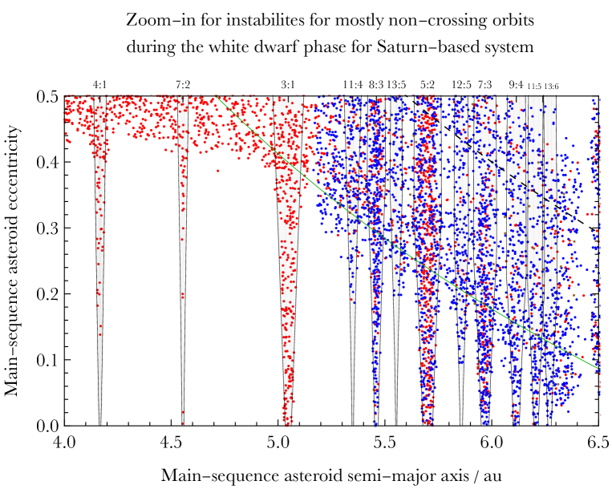
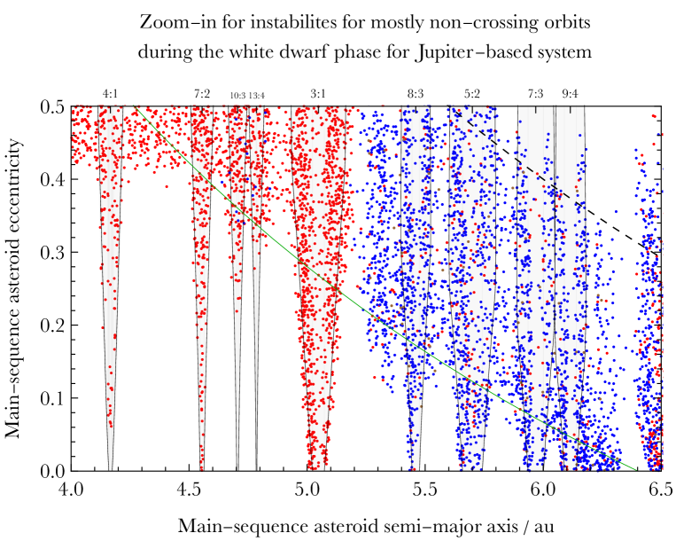
نركز هنا على البنى الرنينية الواقعة ضمن مناطق المدارات غير المتقاطعة، وهي مبرزة في الشكل 4.
تمثل المخططات في ذلك الشكل تكبيرات للمخططات في الشكل 1، مع مناطق تذبذب رنيني مركبة فوقها ممثلة بالمناطق المظللة بالرمادي الفاتح والمحدودة بأزواج من منحنيات سوداء رفيعة. وتُحسب عروض التذبذب هذه من Gallardo et al. (2021) وتمثل فعلياً عروض تذبذب عظمى.
لحساب هذه العروض العظمى، افترضنا للنجم كتلة نجمية قدرها . وبالنسبة إلى الكوكب، اعتمدنا au، و، و، حيث يمثل طول حضيض الكوكب. وبالنسبة إلى الكويكب، اخترنا وفق موقع الرنين الاسمي (، لرنين :)، وأخذنا عينات من بزيادات قدرها 0.025. ثم ثبتنا ، لكننا أخذنا، لكل قيمة من ، 180 قيماً متساوية الزيادة من ابتداء من . وأخيراً اعتمدنا العرض الأعظمي المتحقق من هذه القيم 180، ووصلنا هذه القيم العظمى عند الشذوذات المختلفة بمنحنيات مستوفاة.
لذلك لم يأخذ حساب عروض التذبذب الرنيني العظمى في الحسبان صراحةً التطور النجمي ولا تطور المعلمات المدارية للكويكب. ومع ذلك، تبدو هذه الطريقة في حساب عروض التذبذب العظمى باستخدام قيم المتوالية الرئيسية فقط فعالة عند مقارنتها بنتائج محاكيات الأجسام ، وهي مستقلة تماماً عن الشيفرة المستخدمة لحساب عروض التذبذب الرنيني.
كما يمكن ملاحظته، تعكس هذه العروض بدقة التأثيرات الرنينية التي تشير إليها مآلات محاكيات الأجسام . وهذه العروض كلها تزداد رتيباً مع حتى قرب قيمة الشذوذ التي تتقاطع عندها المدارات (الخط المتقطع). وحول هذا الموقع، تصبح العروض شبه ثابتة أو تتناقص قليلاً عند قيم أكبر لـ. ومن الصعب تحديد مدى تمثيل هذه البنية للتطور الفيزيائي الفعلي، لأن تداخل الرنينات يحدث بسهولة أكبر عند القيم العالية لـ، وتكون الكويكبات غير المستقرة متناثرة ولا تشكل بنية متماسكة.
بالنسبة إلى المدارات المتقاطعة، تعتمد عروض التذبذب الرنيني على معيار اللقاء القريب المضبوط في شيفرة Gallardo et al. (2021) عبر المعلمة rhtol. وجد Gallardo (2020) أن قيمة دقيقة لمعيار اللقاء القريب هذا في مسألة الأجسام الثلاثة المقيدة هي ثلاثة أنصاف أقطار هيل كوكبية (rhtol )، وهو ما اعتمدناه هنا. كما أجرينا اختبارات موسعة باستخدام rhtol وأكدنا أنه، في حين لا تختلف عروض التذبذب كثيراً بهذه القيمة عندما يكون أسفل منحنى التصادم، فإن العروض فوق منحنى التصادم تصبح غير واقعية ولا تعكس مآلات محاكيات الأجسام الخاصة بنا.
تكشف مقارنة المخططين في الشكل 4 أنه خلال طور القزم الأبيض يختفي تأثير بعض الرنينات عندما تتغير كتلة الكوكب؛ ولا تُرسم إلا الرنينات التي لها أثر قابل للتمييز في الديناميات. فعلى سبيل المثال، خلال هذا الطور من التطور النجمي، بدا أن الكوكب بكتلة المشتري وصل إلى خزانات تلوث عند رنينات الرتبتين 7 و9، أي : و:؛ ولا يسهل التعرف إلى مثل هذه الخزانات في بنية الكوكب بكتلة زحل.
3.3 رنين :
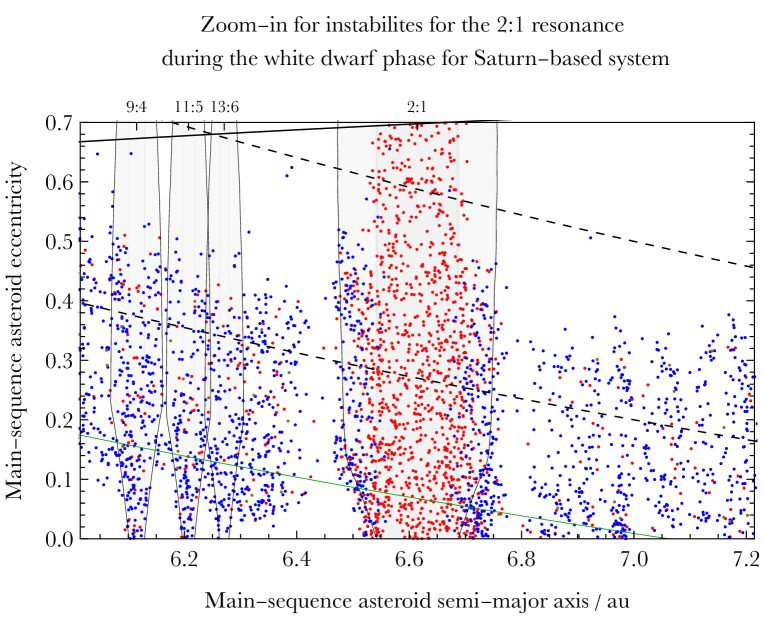
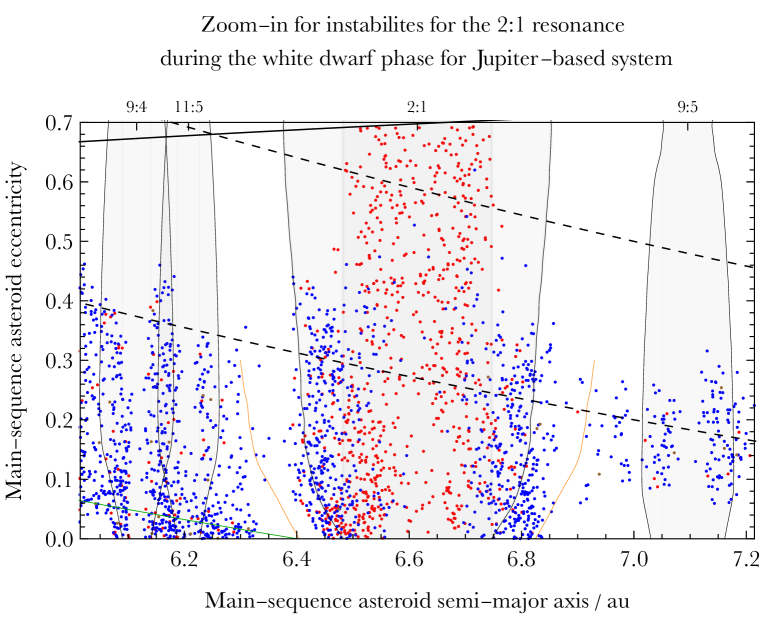
نكبر بعد ذلك المنطقة المحيطة برنين : في الشكل 5. ويستحق هذا الرنين عناية خاصة بسبب قوته، إذ إنه رنين من الرتبة الأولى، ولأنه أُبرز في دراسات سابقة لرنينات ما بعد المتوالية الرئيسية. كذلك يبين الشكل 1 مباشرة أن رنين : محرك مهم لتلوّث الأقزام البيضاء.
في الشكل 5، توجد بنى رنينية واضحة مباشرة غير رنين :. وقد حُسبت عروض التذبذب الرنيني لهذه الرنينات الأخرى وعُرضت على المخططات، مع أن تأثيرها واضح أساساً في نطاق المدارات غير المتقاطعة. وبالنسبة إلى رنين :، وفي البنية الكوكبية التي اعتمدناها، تحدث المدارات المتقاطعة عندما .
نرى بنية على جانبي حد الشذوذ هذا. بالنسبة إلى ، فإن منطقة عرض التذبذب الرنيني الأعظمي المحسوبة تقدم حداً نوعياً جيداً للسلوك الرنيني، لكنها تبدو أنها تقلل قليلاً من تقدير منطقة التأثير الحقيقية.
أحد الأسباب المحتملة لهذا التقليل هو أن عرض الرنين المحسوب هنا لا يأخذ في الحسبان التطور النجمي. فعندما تتغير نسبة كتلة النجم إلى الكوكب، ينبغي أن يتغير عرض التذبذب الرنيني أيضاً. وقد رسم Debes et al. (2012) هذا التغير صراحة لرنين : باستخدام صيغة عرض التذبذب الرنيني من Murray & Dermott (1999)، وهي لا تدمج عدداً من معلمات الإدخال يضاهي الوصفة شبه التحليلية لـGallardo et al. (2021).
لذلك، وبوصف ذلك تمريناً استكشافياً، أعدنا حساب عرض التذبذب الرنيني الأعظمي للنظام ذي كوكب بكتلة المشتري باستخدام وصفة Gallardo et al. (2021)، لكننا اعتمدنا كتلة القزم الأبيض البالغة بدلاً من كتلة المتوالية الرئيسية البالغة . ورسمنا النتيجة على شكل زوج من منحنيات رفيعة متصلة برتقالية مركبة فوق اللوحة السفلى من الشكل 5. غير أن هذه المنحنيات تبدو أنها تبالغ كثيراً في تقدير منطقة تأثير الرنين عندما .
وبالعودة إلى حسابنا الأصلي لعرض التذبذب الرنيني، تشير أنواع عدم الاستقرار إلى أنه يمكننا على نحو مفيد تقسيم المنطقة الرنينية فوق منحنى تقاطع المدارات إلى “لب” و“ذيل”. نعرّف اللب بأنه العرض المحسوب عند كما يطبق على جميع ، كما تبين المنطقة الرمادية الأغمق قليلاً. ثم يعرّف الذيل بأنه المنطقة الواقعة خارج اللب ولكن المحدودة بحدود عرض التذبذب الرنيني.
بهذه التعريفات، تشير معاينة بصرية للمخطط مباشرة إلى أن كويكبات : التي تلوث القزم الأبيض تقع في اللب الرنيني، وأن تلك التي تفلت من النظام تقع في الأذيال. ويبدو أن هذا الاتجاه يستمر حتى في نطاق المدارات المتقاطعة ()، إلا أن مواضع الكويكبات التي تُظهر إفلاتاً تلتصق بحدود اللب قبل أن تختفي تماماً فوق شذوذ حرج ما. وتصح هذه الاتجاهات في حالتي كتلة المشتري وكتلة زحل كليهما.
التفسير الفيزيائي لهذا السلوك هو أن الكويكبات العميقة بما يكفي في الرنين (داخل اللب) هي وحدها القادرة على التطور على مدى طويل بحيث تزداد شذوذاتها إلى قرب الوحدة بينما تبقى أنصاف محاورها الرئيسية شبه ثابتة. وفي المقابل، فإن الكويكبات الواقعة على حافة الرنين (في الأذيال) تفلت من الرنين بسهولة أكبر ثم تختبر لقاءات مع الكوكب، مما يسمح بضخ أنصاف محاورها الرئيسية دورياً حتى القذف.
3.4 الرنينان : و:
بعد ذلك نكبر الجزء الأيمن الأقصى من الشكلين 1 و3 في الشكل 6، وهو يضم كويكبات تقع كلها تقريباً في نطاق المدارات المتقاطعة. هنا، بالنسبة إلى الرنينين من الرتبة الأولى، فإن عرض التذبذب الرنيني الأعظمي المحسوب من وصفة Gallardo et al. (2021) لا يزداد رتيباً مع ، بل يفعل العكس تماماً.
يوحي توزيع الكويكبات غير المستقرة والمستقرة المبيّن في الشكل بقوة بأن كلاً من رنيني : و: أدى دوراً في التطور الديناميكي للكويكبات. ويبدو أن رنين : مارس تأثيراً في كويكبات ذات قيم أعلى من مقارنة برنين :. وتشمل منطقتا الرنين مزيجاً من الكويكبات التي تلوث القزم الأبيض، وتلك التي تفلت من النظام خلال طور القزم الأبيض.
تجدر ملاحظة اللوحة السفلى من الشكل 6 لأنها تبين كيف يمكن حماية الكويكبات من عدم الاستقرار عبر مراحل مختلفة من التطور النجمي باحتجازها في رنين قوي. ويبين المخطط أيضاً أن احتمال حماية هذه الكويكبات أكبر عند القيم المنخفضة لـ، مع أن عدداً قليلاً يبقى مستقراً عند قيم تقارب أعلى قيم المأخوذة عينات منها.
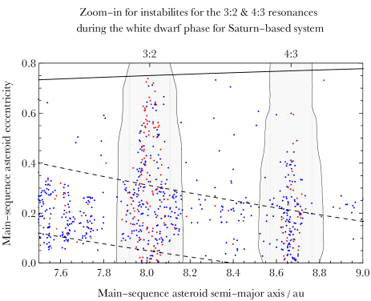
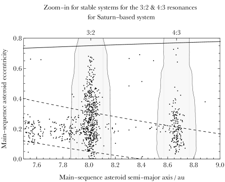
3.5 مقارنات عرض التذبذب الرنيني
لقد بينّا الآن، بالمقارنة مع محاكيات الأجسام ، أن مناطق التذبذب الرنيني العظمى المحسوبة بقيم المتوالية الرئيسية قد تكون دقيقة بما يكفي لاستخدامها بدائل موثوقة للموقع الابتدائي للسلوك الديناميكي الرنيني بعد المتوالية الرئيسية. في هذا القسم الفرعي، نستكشف بمزيد من التفصيل كيف تختلف عروض التذبذب الرنيني العظمى هذه تبعاً لمعلمات الإدخال المعتمدة. تعرض جميع المخططات في هذا القسم مخرجات محاكيات الأجسام من طور القزم الأبيض فقط.
أولاً، اختبرنا حساسية حسابات عرض التذبذب الرنيني الأعظمي لتواتر أخذ العينات من . حتى الآن، حسبنا العروض لكل من 180 قيمة متساوية التباعد لـ، ثم رسمنا المخرج الموافق لأعظم هذه العروض. يوضح الشكل 7 نتيجة خفض معدل أخذ العينات هذا لرنين : في النظام ذي كوكب بكتلة زحل.
رسمنا على الشكل خمسة أزواج مختلفة من المنحنيات توافق معدلات أخذ عينات قدرها 180 و72 و36 و18 وقيمة 1. ولا يمكن تمييز الفروق بين الأزواج الأربعة الأولى من المنحنيات في معظم نطاق عدم تقاطع المدارات، مما يساعد على توضيح متانة اختيارنا المرجعي للمخططات في هذه الورقة. غير أننا عندما أخذنا عينة من قيمة واحدة فقط لـ، وهي في هذه الحالة ، اختلفت النتيجة، كما يبين الزوج الأوسط من المنحنيات.
إجمالاً، يبين هذا المثال أن اعتماد قيمة واحدة لـ ينتج نتيجة مختلفة كمياً وأقل دقة من أخذ عينات من قيم متعددة واعتماد المخرج الأعظمي. علاوة على ذلك، تبين نتائج محاكيات الأجسام لدينا أن منطقة التذبذب الرنيني في نطاق عدم تقاطع المدارات تزداد رتيباً مع ، ولا تنحني نحو الداخل عند ، كما يشير منحنى .
ومن أجل تدعيم هذه الاستنتاجات، أجرينا التمرين نفسه لرنين :. وتُعرض النتيجة في الشكل 8، وهي النتيجة نفسها: فشكل المنحنيات الناتج من القيمة الثابتة لـ لا يعكس منطقة التأثير من محاكيات الأجسام ، وهنا يقلل بدرجة كبيرة من عدد الكويكبات الواقعة تحت هذا التأثير.
لأن وصفة عرض التذبذب الرنيني لـGallardo et al. (2021) تتطلب مجموعة كاملة من المدخلات المدارية الثلاثية الأبعاد لكل من الكويكب والكوكب، ولأن جميع العناصر المدارية للكويكبات اختلفت طوال محاكياتنا، فقد استكشفنا بعد ذلك كيف تتغير هذه المنحنيات الرنينية بتغيير و. وتُعرض النتيجة في الشكل 9.
يوضح هذا الشكل 8 أزواجاً مختلفة من منحنيات عرض التذبذب الرنيني الأعظمي، يتداخل بعضها، وتوافق (، ) = (، )، و(، )، و(، )، و(، )، و(، )، و(، )، و(، ) و(، ). وتقدم جميع هذه المنحنيات أشكالاً تعكس نتائج محاكيات الأجسام ، لكن مع أذيال مختلفة قليلاً.
بالنسبة إلى الكويكبات التي تلوث القزم الأبيض، نتوقع أن يزداد مدى تساوي الخواص الذي تدخل به الكويكبات نصف قطر روش للقزم الأبيض مع كتلة الكوكب (Veras et al., 2021). لذلك، للكواكب ذات الكتلة الكبيرة خصوصاً، قد نحصل على حدود أدق لمنطقة التذبذب الرنيني بأخذ عينات من قيم متعددة لـ و و، بدلاً من فقط. غير أن القيام بذلك سيكون مكلفاً حاسوبياً.
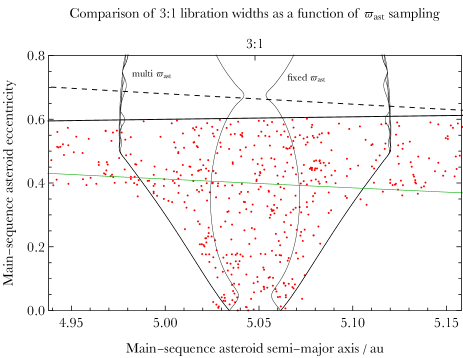
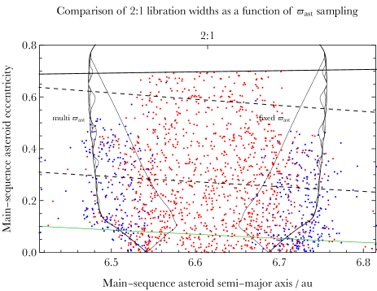
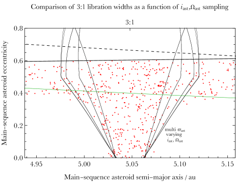
| Resonance | Total | WD | WD | WD | GB | GB | GB | Stable | |
|---|---|---|---|---|---|---|---|---|---|
| / au | Number | Hit star | Escaped | Hit planet | Hit star | Escaped | Hit Planet | ||
| : Saturn | 4.17 | 531 | |||||||
| : Jupiter | 4.17 | 1014 | |||||||
| : Saturn | 4.55 | 543 | |||||||
| : Jupiter | 4.55 | 900 | |||||||
| : Saturn | 5.05 | 1666 | |||||||
| : Jupiter | 5.05 | 2986 | |||||||
| : Saturn | 5.46 | 1187 | |||||||
| : Jupiter | 5.46 | 1886 | |||||||
| : Saturn | 5.70 | 2102 | |||||||
| : Jupiter | 5.70 | 3234 | |||||||
| : Saturn | 5.97 | 1803 | |||||||
| : Jupiter | 5.97 | 2642 | |||||||
| : Saturn | 6.11 | 1506 | |||||||
| : Jupiter | 6.11 | 2328 | |||||||
| : Saturn | 6.61 | 5295 | |||||||
| : Jupiter | 6.61 | 8787 | |||||||
| : Saturn | 8.01 | 6084 | |||||||
| : Jupiter | 8.01 | 9619 | |||||||
| : Saturn | 8.67 | 5873 | |||||||
| : Jupiter | 8.67 | 8881 |
3.6 المآلات والقوى الرنينية
حتى الآن، أوضحت المخططات في هذه الورقة مآلات مختلفة لعدم الاستقرار في رنينات مختلفة. في هذا القسم الفرعي، نورد هذه النتائج في جدول للرنينات المختارة في الجدول 1.
تُرتب الرنينات (العمود 1) بحسب موقعها الأفقي في الأشكال 1-3 (العمود الثاني). ويورد العمود الثالث العدد الكلي للكويكبات التي احتوتها تلك المنطقة الرنينية ابتدائياً. ويشمل هذا العدد أيضاً الكويكبات التي أُزيلت خلال أول 10 Myr بكتلة نجمية ثابتة بغرض السماح للنظام بأن يستقر ديناميكياً، ولو إلى حد محدود.
تورد الأعمدة الباقية مآلات المحاكيات كنسب مئوية من عينة الكويكبات الابتدائية (العمود الثالث)، مع نتائج مبرزة بالتسطير في العمود الرابع. ويوضح الجدول الاتجاهات الآتية:
-
1.
تنشأ أهم ملوثات الأقزام البيضاء من الرنينات : و: و:، إذ يدخل ما لا يقل عن 18 في المئة من الكويكبات في كل من تلك المناطق الرنينية نصف قطر روش للنجم. وبالمقارنة مع رنين آخر من الرتبة الثالثة في نطاق عدم تقاطع المدارات، وهو :، فإن رنين : ملوّث أكثر كفاءة بكثير. وتدعم هذه النتيجة الاستنتاج القائل إن رنين : يستطيع بسهولة إثارة الجسيمات الاختبارية إلى شذوذ عال في وجود كوكب شاذ قليلاً (Pichierri et al., 2017).
-
2.
ثمة مقياس مختلف لكفاءة الرنينات : و: و: في تلويث القزم الأبيض، وهو مقارنتها بالعدد الكلي للملوثات عبر قرص الكويكبات الابتدائي بأكمله. ومع أن هذه المقارنة تعتمد بشدة على اختيارنا للحافتين الداخلية والخارجية للقرص الابتدائي، فقد تبقى مفيدة. وبالنسبة إلى النظامين ذوي كوكب بكتلة زحل وبكتلة المشتري، على الترتيب، تولد نحو و في المئة من جميع الملوثات من الرنينات : و: و:. وبصورة أخص، في النظام ذي كوكب بكتلة زحل، قدم كل من هذه الرنينات على الترتيب و و في المئة من الملوثات، أما في النظام ذي كوكب بكتلة المشتري فكانت النسب و و.
-
3.
يمكن للرنينات أن تثبت الكويكبات، حتى تلك الموجودة في مدارات متقاطعة (: و:)، وأحياناً بكميات كبيرة (عشرات في المئة من الخزان الأصلي). وهذه الجماعات المستقرة مهمة أيضاً على نحو محتمل لتلوّث الأقزام البيضاء، ولا سيما في الأزمنة المتأخرة (بعد 1 Gyr من تبريد القزم الأبيض) لأنها قد تكون (أ) قابلة للوصول لاحقاً بواسطة مضطربات خارجية لم تؤد في البداية أي دور في الديناميات ضمن عشرات الوحدات الفلكية (Bonsor & Veras, 2015; Veras et al., 2016)، أو (ب) عندما تكون قريبة بما يكفي من القزم الأبيض، تُجر إلى النجم بإشعاعه الذاتي (Rafikov, 2011; Veras et al., 2015b, 2022; Veras, 2020; Malamud et al., 2021; Brouwers et al., 2022).
-
4.
يكون الإفلات من النظام أصعب، إن لم يكن مستحيلاً، من المناطق الرنينية القريبة من النجم. في هذه المنطقة لا توجد لقاءات قريبة بين الكويكبات والكوكب؛ وكانت مثل هذه اللقاءات لازمة لقذف كويكب.
-
5.
تصادمات الكويكبات مع الكوكب نادرة في جميع الحالات. والرنينات الثلاثة التي تنتج أكبر كسور من هذه الأنواع من التصادمات هي الرنينات من الرتبتين 4 و5، وهي : و: و:، لكن عند مستوى 1 في المئة فقط.
في محاولة لتكميم قوة رنينات مختلفة، استخدمنا مقياس قوة عددياً من الوصفة شبه التحليلية عُرّف في المعادلة 8 من Gallardo (2006) بوصفه فرقاً في تقييمات دالة الاضطراب المحسوبة عددياً (وليس بالتوسعات). ثم طبّعنا مقياس القوة العددي هذا للرنينات المختارة بوصفه دالة في ، ونعرض النتائج في الشكل 10.
يوضح ذلك المخطط أن القوة، في نطاق المدارات غير المتقاطعة، تتغير بسلاسة مع . كذلك تكون الفروق في القوة أوضح ما تكون للكويكبات على مدارات منخفضة الشذوذ. يأخذ مقياس القوة هذا على نحو مفيد في الحسبان كلاً من رتبة الرنين والقرب من الكوكب، لكنه لا يتتبع التطور طويل الأمد، الذي تعرض نتائجه في الجدول 1.
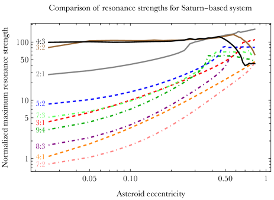
4 المناقشة
لا تحمل نتائج هذا البحث أهمية ديناميكية أصيلة فحسب، بل قد تُطبق أيضاً على أنظمة حقيقية منفردة في المستقبل القريب، ولا سيما مع اكتشاف مزيد من أنظمة الأقزام البيضاء الملوثة المناسبة ذات الكوكب الواحد. لا توجد حالياً أنظمة مؤكدة على هذا النحو، لكننا نعرف على الأقل نظيراً قريباً من المشتري في فصل الكوكب عن النجم وكتلته، هو MOA-2010-BLG-477L b (Blackman et al., 2021). فإذا تبين أن ذلك النجم ملوث، فقد نستطيع تقديم عبارات نوعية عن الدور الذي تؤديه رنينات الحركة المتوسطة في التطور الديناميكي لذلك النظام.
إن الكلفة الحاسوبية العالية لمحاكياتنا تمنع استكشافاً أوسع لفضاء المعلمات في هذا البحث. ومن بين “قائمة الأمنيات” لدينا للامتدادات المحتملة لهذا البحث النظر في كوكب داخلي، بدلاً من كوكب خارجي، وتحديد كيفية خفض كتلة الكوكب مع رفع الدقة لكي يظل بالإمكان كشف البصمات الرنينية. وقد أجرى Veras et al. (2021) استكشافاً أوسع لفضاء المعلمات، لكن بدقة أدنى بكثير.
قد تساعد نتائجنا هنا أيضاً الدراسات التي تشتق معايير حدود الاستقرار والمدد الزمنية للمدارات الشاذة (Georgakarakos, 2008; Petit et al., 2018)، وكذلك معايير إثارة الفوضى وتداخل الرنينات (Quillen, 2011; Mustill & Wyatt, 2012; Deck et al., 2013; Hadden & Lithwick, 2018; Petit et al., 2020; Tamayo et al., 2021; Rath et al., 2022)، وتحديد كيف يمكن لهذه المعايير أن تتغير مع تحولات الكتلة أثناء تطور النجم.
ما أجرينا تكامله هنا هو حالات كثيرة من مسألة الأجسام الثلاثة المقيدة الشاذة وغير المشتركة في المستوى مع فقدان الكتلة. غير أنه، كما اقترح Ramos et al. (2015)، فإن هذا السيناريو معقد بما يكفي لكي لا يوصف بالضرورة جيداً بفئة واحدة من المقاييس الديناميكية (مثل استقرار هيل، واستقرار لاغرانج، وعجز الزخم الزاوي، وحدود المنطقة الفوضوية، وتداخل الرنينات). فعلى سبيل المثال، لا يكون أي من أنظمة : المستقرة مستقراً وفق هيل، كما أن كثيراً من دراسات تداخل الرنينات المذكورة أعلاه تفترض مدارات دائرية وعدة كواكب ضخمة.
وفي الواقع، يتمثل امتداد محتمل لهذا العمل في إدخال كوكب ثان في محاكياتنا. عندئذ قد تصبح الرنينات طويلة الأمد بارزة، وقد تصلح دراستا Smallwood et al. (2018) وSmallwood et al. (2021) على نحو أفضل معياراً للمقارنة. غير أن الامتداد الأكثر أهمية فيزيائياً لهذه المحاكيات ربما يكون نمذجة الأثر الإشعاعي في الجسيمات الاختبارية. ولا تصح نتائجنا هنا إلا عندما تكون الجسيمات الاختبارية كبيرة بما يكفي ( km) لكي لا تتأثر. أما الحطام الأصغر فسيتحرك بدلاً من ذلك تحركاً كبيراً خلال المحاكيات بفعل الإشعاع النجمي وحده (Bonsor & Wyatt, 2010; Dong et al., 2010; Veras et al., 2015a, 2019; Zotos & Veras, 2020; Ferich et al., 2022).
5 الخلاصة
أنتجنا صوراً رنينية عالية الدقة (الأشكال 1-3) لنظام متطور ذي كوكب واحد يضم كويكباً، وقارنا نتائج محاكيات الأجسام بحاسبة شبه تحليلية لعرض التذبذب الرنيني (Gallardo et al., 2021) لا تعتمد على توسعات دالة الاضطراب التقليدية وتتيح مدخلات ثلاثية الأبعاد كاملة. وتشمل هذه الصور نطاقات من المدارات المتقاطعة وغير المتقاطعة معاً، وتقدم فهماً لكفاءات الإفلات والتلوث والاستقرار لرنينات مختلفة في مراحل مختلفة من التطور النجمي (الجدول 1). إن حساباتنا لعرض التذبذب الرنيني الأعظمي متينة (مثلاً الشكل 7)، وتبين على نحو مفيد (مثلاً الشكل 4) أننا نستطيع استخدام قيم المتوالية الرئيسية لتحديد مجال تأثير الرنينات المختلفة بدقة، مما يوفر الوقت والموارد الحاسوبية في الدراسات المستقبلية القائمة على الرنين للأنظمة الكوكبية المتطورة.
الشكر والتقدير
نشكر Tabare Gallardo على تقديم رؤى قيمة حسّنت المخطوطة بدرجة كبيرة. يقر DV ممتناً بدعم STFC عبر زمالة Ernest Rutherford (المنحة ST/P003850/1).
إتاحة البيانات
تتوفر مدخلات المحاكاة ونتائجها التي نوقشت في هذه الورقة عند طلب معقول إلى المؤلف المسؤول عن المراسلات.
References
- Antoniadou & Veras (2016) Antoniadou, K. I., & Veras, D. 2016, MNRAS, 463, 4108
- Antoniadou & Veras (2019) Antoniadou, K. I., & Veras, D. 2019, A&A, 629, A126
- Blackman et al. (2021) Blackman, J. W., Beaulieu, J. P., Bennett, D. P., et al. 2021, Nature, 598, 272.
- Bonsor & Wyatt (2010) Bonsor, A., & Wyatt, M. 2010, MNRAS, 409, 1631
- Bonsor et al. (2011) Bonsor, A., Mustill, A. J., & Wyatt, M. C. 2011, MNRAS, 414, 930
- Bonsor & Veras (2015) Bonsor, A., & Veras, D. 2015, MNRAS, 454, 53
- Bonsor et al. (2017) Bonsor, A., Farihi, J., Wyatt, M. C., & van Lieshout, R. 2017, MNRAS, 468, 154
- Brouwers et al. (2022) Brouwers, M. G., Bonsor, A., & Malamud, U. 2022, MNRAS, 509, 2404.
- Brown et al. (2017) Brown, J. C., Veras, D., & Gänsicke, B. T. 2017, MNRAS, 468, 1575
- Buchan et al. (2022) Buchan, A. M., Bonsor, A., Shorttle, O., et al. 2022, MNRAS, 510, 3512.
- Caiazzo & Heyl (2017) Caiazzo, I., & Heyl, J. S. 2017, MNRAS, 469, 2750.
- Chamandy et al. (2021) Chamandy, L., Blackman, E. G., Nordhaus, J., et al. 2021, MNRAS, 502, L110.
- Cunningham et al. (2022) Cunningham, T., Wheatley, P. J., Tremblay, P.-E., et al. 2022, Nature, 602, 219.
- Curry et al. (2022) Curry, A., Bonsor, A., Lichtenberg, T., et al. 2022, MNRAS, 515, 395.
- Debes & Sigurdsson (2002) Debes, J. H., & Sigurdsson, S. 2002, ApJ, 572, 556
- Debes et al. (2012) Debes, J. H., Walsh, K. J., & Stark, C. 2012, ApJ, 747, 148
- Deck et al. (2013) Deck, K. M., Payne, M., & Holman, M. J. 2013, ApJ, 774, 129.
- Dermott et al. (2021) Dermott, S. F., Li, D., Christou, A. A., et al. 2021, MNRAS, 505, 1917.
- Dong et al. (2010) Dong, R., Wang, Y., Lin, D. N. C., & Liu, X.-W. 2010, ApJ, 715, 1036
- Dosopoulou & Kalogera (2016a) Dosopoulou, F. & Kalogera, V. 2016a, ApJ, 825, 70.
- Dosopoulou & Kalogera (2016b) Dosopoulou, F. & Kalogera, V. 2016b, ApJ, 825, 71.
- Doyle et al. (2019) Doyle, A. E., Young, E. D., Klein, B., et al. 2019, Science, 366, 356
- Doyle et al. (2021) Doyle, A. E., Desch, S. J., & Young, E. D. 2021, ApJL, 907, L35.
- Farihi et al. (2013) Farihi, J., Gänsicke, B. T., & Koester, D. 2013, Science, 342, 218.
- Farihi (2016) Farihi, J. 2016, New Astronomy Reviews, 71, 9
- Ferich et al. (2022) Ferich, N., Baronett, S. A., Tamayo, D., et al. 2022, ApJS, 262, 41.
- Frewen & Hansen (2014) Frewen, S. F. N., & Hansen, B. M. S. 2014, MNRAS, 439, 2442
- Gaia Collaboration et al. (2022) Gaia Collaboration, Arenou, F., Babusiaux, C., et al. 2022, arXiv:2206.05595, In Press, A&A
- Gallardo (2006) Gallardo, T. 2006, Icarus, 184, 29.
- Gallardo (2019) Gallardo, T. 2019, Icarus, 317, 121.
- Gallardo (2020) Gallardo, T. 2020, Celestial Mechanics and Dynamical Astronomy, 132, 9.
- Gallardo et al. (2021) Gallardo, T., Beaugé, C., & Giuppone, C. A. 2021, A&A, 646, A148.
- Gänsicke et al. (2012) Gänsicke, B. T., Koester, D., Farihi, J., et al. 2012, MNRAS, 424, 333
- Gänsicke et al. (2019) Gänsicke, B. T., Schreiber, M. R., Toloza, O., et al. 2019, Nature, 576, 61
- Gentile Fusillo et al. (2017) Gentile Fusillo, N. P., Gänsicke, B. T., Farihi, J., et al. 2017, MNRAS, 468, 971.
- Georgakarakos (2008) Georgakarakos, N. 2008, Celestial Mechanics and Dynamical Astronomy, 100, 151.
- Grunblatt et al. (2018) Grunblatt, S. K., Huber, D., Gaidos, E., et al. 2018, ApJL, 861, L5.
- Grunblatt et al. (2022) Grunblatt, S. K., Saunders, N., Chontos, A., et al. 2022, Submitted to ApJ
- Hadden & Lithwick (2018) Hadden, S. & Lithwick, Y. 2018, AJ, 156, 95.
- Hadjidemetriou (1963) Hadjidemetriou, J. D. 1963, Icarus, 2, 440
- Hamers & Portegies Zwart (2016) Hamers A. S., Portegies Zwart S. F., 2016, MNRAS, 462, L84
- Hoskin et al. (2020) Hoskin, M. J., Toloza, O., Gänsicke, B. T., et al. 2020, MNRAS, 499, 171.
- Hurley et al. (2000) Hurley, J. R., Pols, O. R., & Tout, C. A. 2000, MNRAS, 315, 543.
- Jura (2003) Jura, M. 2003, ApJL, 584, L91
- Jura & Young (2014) Jura, M., & Young, E. D. 2014, Annual Review of Earth and Planetary Sciences, 42, 45
- Klein et al. (2021) Klein, B. L., Doyle, A. E., Zuckerman, B., et al. 2021, ApJ, 914, 61.
- Koester et al. (2014) Koester, D., Gänsicke, B. T., & Farihi, J. 2014, A&A, 566, A34.
- Kunitomo et al. (2011) Kunitomo, M., Ikoma, M., Sato, B., Katsuta, Y., & Ida, S. 2011, ApJ, 737, 66
- Lagos et al. (2021) Lagos, F., Schreiber, M. R., Zorotovic, M., et al. 2021, MNRAS, 501, 676.
- Li et al. (2021) Li, D., Mustill, A. J., & Davies, M. B. 2021, MNRAS, 508, 5671.
- Li et al. (2022) Li, D., Mustill, A. J., & Davies, M. B. 2022, ApJ, 924, 61.
- Luhman et al. (2011) Luhman, K. L., Burgasser, A. J., & Bochanski, J. J. 2011, ApJL, 730, L9.
- Madappatt et al. (2016) Madappatt, N., De Marco, O., & Villaver, E. 2016, MNRAS, 463, 1040
- Malamud & Perets (2020a) Malamud, U. & Perets, H. B. 2020a, MNRAS, 492, 5561
- Malamud & Perets (2020b) Malamud, U. & Perets, H. B. 2020b, MNRAS, 493, 698.
- Malamud et al. (2021) Malamud, U., Grishin, E., & Brouwers, M. 2021, MNRAS, 501, 3806.
- Maldonado et al. (2021) Maldonado, R. F., Villaver, E., Mustill, A. J., et al. 2021, MNRAS, 501, L43.
- Manser et al. (2020) Manser, C. J., Gänsicke, B. T., Gentile Fusillo, N. P., et al. 2020, MNRAS, 493, 2127
- McDonald & Veras (2021) McDonald, C. H. & Veras, D. 2021, MNRAS, 506, 4031.
- Melis & Dufour (2017) Melis, C. & Dufour, P. 2017, ApJ, 834, 1.
- Moro-Martín (2022) Moro-Martín, A. 2022, arXiv:2205.04277
- Muñoz & Petrovich (2020) Muñoz, D. J. & Petrovich, C. 2020, ApJL, 904, L3.
- Murray & Dermott (1999) Murray, C. D. & Dermott, S. F. 1999, Solar system dynamics by C.D. Murray and S.F. McDermott. (Cambridge, UK: Cambridge University Press), ISBN 0-521-57295-9 (hc.), ISBN 0-521-57297-4 (pbk.).
- Mustill & Villaver (2012) Mustill, A. J., & Villaver, E. 2012, ApJ, 761, 121
- Mustill & Wyatt (2012) Mustill, A. J. & Wyatt, M. C. 2012, MNRAS, 419, 3074.
- Mustill et al. (2014) Mustill, A. J., Veras, D., & Villaver, E. 2014, MNRAS, 437, 1404
- Mustill et al. (2018) Mustill, A. J., Villaver, E., Veras, D., Gänsicke, B. T., Bonsor, A. 2018, MNRAS, 476, 3939.
- Nordhaus & Spiegel (2013) Nordhaus, J., & Spiegel, D. S. 2013, MNRAS, 432, 500
- O’Connor & Lai (2020) O’Connor, C. E. & Lai, D. 2020, MNRAS, 498, 4005.
- O’Connor et al. (2022) O’Connor, C. E., Teyssandier, J., & Lai, D. 2022, MNRAS, 513, 4178.
- Omarov (1962) Omarov, T. B. 1962, Izv. Astrofiz. Inst. Acad. Nauk. KazSSR, 14, 66
- Payne et al. (2016) Payne, M. J., Veras, D., Holman, M. J., Gänsicke, B. T. 2016, MNRAS, 457, 217
- Petit et al. (2018) Petit, A. C., Laskar, J., & Boué, G. 2018, A&A, 617, A93.
- Petit et al. (2020) Petit, A. C., Pichierri, G., Davies, M. B., et al. 2020, A&A, 641, A176.
- Petrovich & Muñoz (2017) Petrovich, C., & Muñoz, D. J. 2017, ApJ, 834, 116
- Pichierri et al. (2017) Pichierri, G., Morbidelli, A., & Lai, D. 2017, A&A, 605, A23.
- Quillen (2011) Quillen, A. C. 2011, MNRAS, 418, 1043.
- Raddi et al. (2015) Raddi, R., Gänsicke, B. T., Koester, D., et al. 2015, MNRAS, 450, 2083.
- Rafikov (2011) Rafikov, R. R. 2011, ApJL, 732, L3
- Ramos et al. (2015) Ramos, X. S., Correa-Otto, J. A., & Beaugé, C. 2015, Celestial Mechanics and Dynamical Astronomy, 123, 453.
- Rath et al. (2022) Rath, J., Hadden, S., & Lithwick, Y. 2022, ApJ, 932, 61.
- Rocchetto et al. (2015) Rocchetto, M., Farihi, J., Gänsicke, B. T., et al. 2015, MNRAS, 449, 574
- Ronco et al. (2020) Ronco, M. P., Schreiber, M. R., Giuppone, C. A., et al. 2020, ApJL, 898, L23.
- Sigurdsson et al. (2003) Sigurdsson, S., Richer, H. B., Hansen, B. M., et al. 2003, Science, 301, 193.
- Smallwood et al. (2018) Smallwood, J. L., Martin, R. G., Livio, M., & Lubow, S. H. 2018, MNRAS, 480, 57
- Smallwood et al. (2021) Smallwood, J. L., Martin, R. G., Livio, M., et al. 2021, MNRAS, 504, 3375.
- Stephan et al. (2017) Stephan, A. P., Naoz, S., & Zuckerman, B. 2017, ApJL, 844, L16
- Stephan et al. (2021) Stephan, A. P., Naoz, S., & Gaudi, B. S. 2021, ApJ, 922, 4.
- Swan et al. (2019) Swan, A., Farihi, J., Koester, D., et al. 2019, MNRAS, 490, 202
- Szölgyén et al. (2022) Szölgyén, Á., MacLeod, M., & Loeb, A. 2022, MNRAS, 513, 5465.
- Tamayo et al. (2021) Tamayo, D., Murray, N., Tremaine, S., et al. 2021, AJ, 162, 220.
- Thorsett et al. (1993) Thorsett, S. E., Arzoumanian, Z., & Taylor, J. H. 1993, ApJL, 412, L33.
- Vanderburg et al. (2020) Vanderburg, A., Rappaport, S. A., Xu, S., et al. 2020, Nature, 585, 363.
- Veras et al. (2011) Veras, D., Wyatt, M. C., Mustill, A. J., Bonsor, A., & Eldridge, J. J. 2011, MNRAS, 417, 2104
- Veras & Evans (2013) Veras, D. & Evans, N. W. 2013, MNRAS, 430, 403.
- Veras et al. (2013a) Veras, D., Mustill, A. J., Bonsor, A., & Wyatt, M. C. 2013a, MNRAS, 431, 1686
- Veras et al. (2013b) Veras, D., Hadjidemetriou, J. D., & Tout, C. A. 2013b, MNRAS, 435, 2416.
- Veras et al. (2014a) Veras, D., Leinhardt, Z. M., Bonsor, A., Gänsicke, B. T. 2014a, MNRAS, 445, 2244
- Veras et al. (2014b) Veras, D., Jacobson, S. A., Gänsicke, B. T. 2014b, MNRAS, 445, 2794
- Veras et al. (2014c) Veras, D., Evans, N. W., Wyatt, M. C., & Tout, C. A. 2014c, MNRAS, 437, 1127
- Veras & Gänsicke (2015) Veras, D., & Gänsicke, B. T. 2015, MNRAS, 447, 1049
- Veras et al. (2015a) Veras, D., Eggl, S., Gänsicke, B. T. 2015a, MNRAS, 451, 2814
- Veras et al. (2015b) Veras, D., Leinhardt, Z. M., Eggl, S., Gänsicke, B. T. 2015b, MNRAS, 451, 3453
- Veras (2016) Veras, D. 2016, Royal Society Open Science, 3, 150571
- Veras et al. (2016) Veras, D., Mustill, A. J., Gänsicke, B. T., et al. 2016, MNRAS, 458, 3942
- Veras et al. (2017) Veras, D., Georgakarakos, N., Dobbs-Dixon, I., & Gänsicke, B. T. 2017, MNRAS, 465, 2053
- Veras et al. (2018) Veras D., Georgakarakos N., Gänsicke B. T., Dobbs-Dixon I., 2018, MNRAS, 481, 2180
- Veras & Fuller (2019) Veras, D., & Fuller, J. 2019, MNRAS, 489, 2941
- Veras & Fuller (2020) Veras, D. & Fuller, J. 2020, MNRAS, 492, 6059.
- Veras et al. (2019) Veras, D., Higuchi, A., & Ida, S. 2019, MNRAS, 485, 708
- Veras (2020) Veras, D. 2020, MNRAS, 493, 4692
- Veras & Kurosawa (2020) Veras, D., & Kurosawa, K. 2020, MNRAS, 494, 442
- Veras & Scheeres (2020) Veras, D., & Scheeres, D. J. 2020, MNRAS, 492, 2437
- Veras et al. (2020) Veras, D., Reichert, K., Flammini Dotti, F., et al. 2020, MNRAS, 493, 5062.
- Veras (2021) Veras, D. 2021, Oxford Research Encyclopedia of Planetary Science, 1. doi:10.1093/acrefore/9780190647926.013.238
- Veras & Hinckley (2021) Veras, D., & Hinckley, S. 2021, MNRAS, 505, 1557.
- Veras et al. (2021) Veras, D., Georgakarakos, N., Mustill, A. J., et al. 2021, MNRAS, 506, 1148.
- Veras et al. (2022) Veras, D., Birader, Y., & Zaman, U. 2022, MNRAS, 510, 3379.
- Villaver et al. (2014) Villaver, E., Livio, M., Mustill, A. J., & Siess, L. 2014, ApJ, 794, 3
- Voyatzis et al. (2013) Voyatzis, G., Hadjidemetriou, J. D., Veras, D., & Varvoglis, H. 2013, MNRAS, 430, 3383
- Wilson et al. (2015) Wilson, D. J., Gänsicke, B. T., Koester, D., et al. 2015, MNRAS, 451, 3237.
- Xu et al. (2013) Xu, S., Jura, M., Klein, B., et al. 2013, ApJ, 766, 132.
- Xu et al. (2017) Xu, S., Zuckerman, B., Dufour, P., et al. 2017, ApJL, 836, L7.
- Yarza et al. (2022) Yarza, R., Razo Lopez, N., Murguia-Berthier, A., et al. 2022, arXiv:2203.11227, Submitted to ApJ
- Zotos & Veras (2020) Zotos, E. E.. Veras. D. 2020, A&A, 637, A14
- Zuckerman et al. (2003) Zuckerman, B., Koester, D., Reid, I. N., et al. 2003, ApJ, 596, 477.
- Zuckerman et al. (2010) Zuckerman, B., Melis, C., Klein, B., et al. 2010, ApJ, 722, 725.